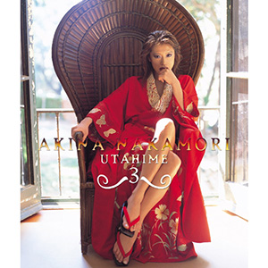

翻唱专辑：第3张
发行年份：2003年
发行日期：12月3日
| 歌名 | 作词 | 作曲 | 编曲 |
|---|---|---|---|
| 回帰 〜歌姫3 Opening (伴奏) | 千住明 | 千住明 | |
| 傘がない (井上陽水的翻唱曲) | 井上陽水 | 井上陽水 | 千住明 |
| 踊り子 (村下孝蔵的翻唱曲) | 村下孝蔵 | 村下孝蔵 | 千住明 |
| 愛はかげろう (雅夢的翻唱曲) | 三浦和人 | 三浦和人 | 千住明 |
| スローなブギにしてくれ (I want you) (南佳孝的翻唱曲) | 松本隆 | 南佳孝 | 千住明 |
| 夜霧よ今夜もありがとう (石原裕次郎的翻唱曲) | 浜口庫之助 | 浜口庫之助 | 千住明 |
| 東京砂漠 (内山田洋とクール・ファイブ的翻唱曲) | 吉田旺 | 内山田洋 | 千住明 |
| 窓 (松山千春的翻唱曲) | 松山千春 | 松山千春 | 千住明 |
| Manish 〜歌姫3 Interlude (伴奏) | 羽佐間健二 | 千住明 | |
| ALONE (B’z的翻唱曲) | 稲葉浩志 | 松本孝弘 | 千住明 |
| ハリウッド・スキャンダル (郷ひろみ的翻唱曲) | 阿木燿子 | 都倉俊一 | 千住明 |
| 恋の予感 (安全地帯的翻唱曲) | 井上陽水 | 玉置浩二 | 千住明 |
| NO MORE ENCORE (宇崎竜童的翻唱曲、原为内藤やす子的歌) | 阿木燿子 | 宇崎竜童 | 千住明 |
| 風の扉 〜歌姫3 Ending (伴奏) | 千住明 | 千住明 |
首发规格：CD: UMCK-1174
唱片公司：UNIVERSAL J
排行榜：Oricon公信榜专辑周榜第25位
再发行：2017年5月3日 - UHQCD: UPCH-7273